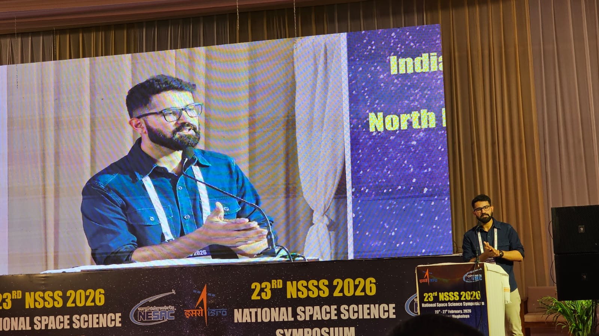
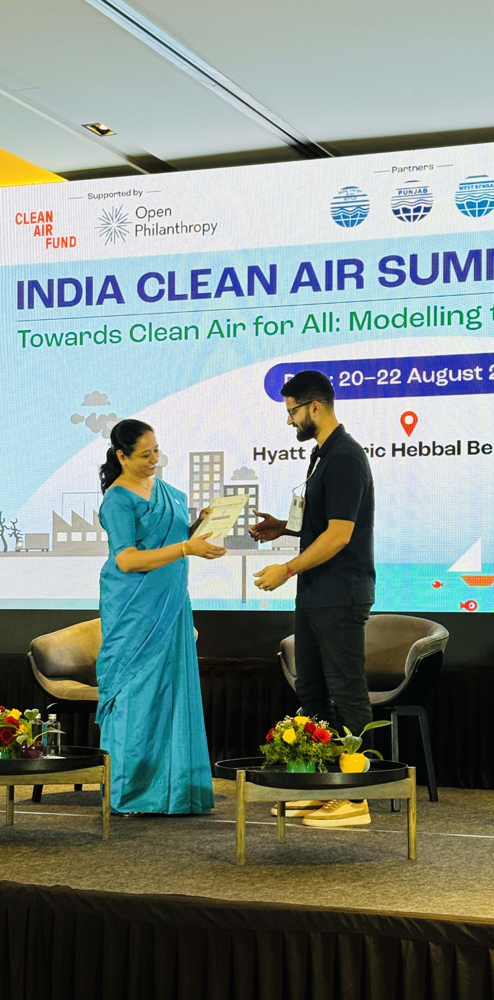

National Space Science Symposium 2026
NSSS 2026
Journey
Events

National Space Science Symposium 2026
NSSS 2026

Indian Clean Air Summit 2025
Bangalore, India
Presentation on ozone and PM2.5 chemical regimes over Delhi.

ECMWF / ESA / EUMETSAT Training 2025
Brussels, Belgium
Advanced training in atmospheric composition.

URSI-RCRS 2024
Bhimtal, India
Conference contribution on long-term urban air pollution trends.
iCACGP-IGAC Conference 2024
Kuala Lumpur, Malaysia
Research presentation on decadal tropospheric ozone variability.